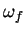

Next: Display STRF
Up: Estimating the STRF
Previous: References for STRFPAK's Calculation
Contents
As mentioned above, the second-order statistics of the stimulus
ensembles is computed in the Calculate stage.
This window visually displays the results.
In the Display Stim Statistics window, there is a popup menu
which gives display options:
- Display Stimulus Spike Cross Correlation:
If this option is chosen, the window shows two image plots of the
cross-correlation: the top one is the plot of original stimulus-response cross
correlation, also called the Spike-triggered Average (STA); the bottom one
is a plot of the smoothed STA. Here the smoothed version of the STA is smoothed by a Hanning Window.
- Display Stimulus Auto-correlation in Separate Window:
- For the non-separable algorithm:
The auto-correlation matrix of the stimulus is a large matrix since each
entry in the matrix corresponds to the temporal cross-correlation of the stimulus intensity at two different spatial locations.
Thus a question dialog box shows up to ask how large a matrix
you want to display, then draws it in a separable window.
Since the antry of the auto-correlation matrix is the same as the entry with time reversed, the plot we draw
here is upper triangle. For the auditory case, it is organized with
the lowest center frequency at the top left corner and the
highest frequency at the bottom right.
- For the separable algorithm:
For the separable case, the auto-correlation of the stimulus is calculated
in the spatial domain and in temporal domain separately.
We display them in one figure: the top one is the stimulus'
spatial second-order correlation and the bottom one is the stimulus'
temporal correlation.
- Display Stimulus-response Cross-correlation in Separate window
(for 2-D only): This option is for plotting the 2-D STA. The top plot
shows time-varying frames of STA. The frame duration is based on the
parameter amp_samprate. For example, if amp_samprate is
 Hz, then the frame duration is about
Hz, then the frame duration is about  ms.
ms.
- Display Modulation Spectrum:
Figure 3.11:
Modulation Spectrum of a sound
|
|
The modulation spectrum of an ensemble of sounds is the two-dimensional
power spectrum of the spectrogram of that sound. Figure 3.11
shows the modulation spectrum of an ensemble of zebra finch songs.
The refers to their temporal modulations in units (in Hz) while
the refers to their spectral modulations,  (in cycles/Hz).
Next: Display STRF
Up: Estimating the STRF
Previous: References for STRFPAK's Calculation
Contents
2004-08-09